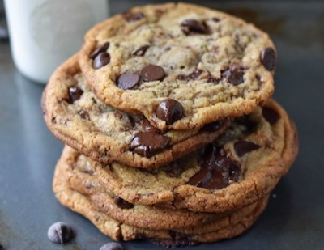

Chewy Cookies

These chewy gooey cookies will be your go-to recipe
when you need to whip up a sweet treat for a get together or simply to
satisfy you own sweet tooth.
Some cookie recipes will call for chilled batter but these are
good to go from the moment you mix. It is a simple recipe but does
require some attention to detail when it comes to technique.
I will include these details throughout the method section to ensure that
you are left with fault-free chewy gooey disks of delight.
Prep Time: 20mins Cook Time: 20mins
Cooling Time: 30mins Servings: 20 Cookies
Ingredients:
- 175g unsalted butter
- 225g light brown soft sugar
- 100g white granulated sugar
- 1tsb vanilla extract
- 1 medium egg
- 1 egg yolk
- 275g plain flour
- 1/2tsb bicarbonate of soda
- 1/2tsb sa salt
- 325g chocolate chips or chopped
Instructions:
- Preheat the oven to 190ºC/170ºC Fan and Line 2 Large baking trays with parchment paper.
- Melt the butter slowly until it is fully melted, leave to cool for a couple of minutes.
- Once cooled, beat in both the light brown soft sugar and granulated sugar until they are all thoroughly combined.
- Add the egg, egg yolk and vanilla extract and beat the mixture until the mixture becomes much lighter in colour, is smooth, and has increased in volume.
- Add the dry ingredients (plain flour, bicarbonate of soda, and sea salt) and beat again until smooth.
- Fold through the chocolate chips.
- Using a 5cm Scoop, portion the cookies onto the trays (I did 6 per tray).
- Bake the cookies in the oven for 12-13 minutes for softer chewy cookies, OR 15 minutes for soft/crunchy cookies.
- Leave the cookies on the tray for 5 minutes after they have finished baking, and then transfer to a wire rack and continue to cool! Enjoy!